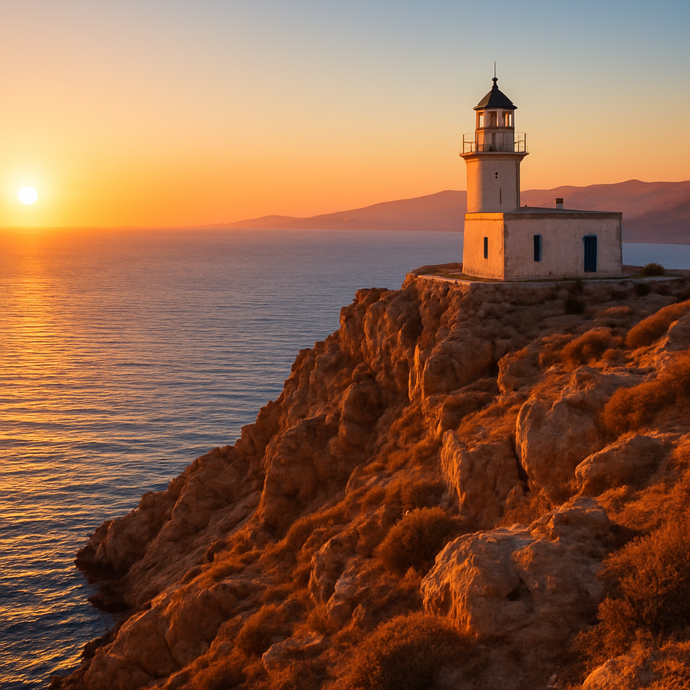

Αποστολή
Η διάδοση της ναυτικής τέχνης και η καλλιέργεια του σεβασμού προς τη θάλασσα.
Γνωρίστε την ιστορία μας, το όραμα μας και τους ανθρώπους που κρατούν ζωντανή τη λέσχη.
Ο Σύλλογος ΠΕΣΑΕΝ αποτελεί ένα εκπολιτιστικό σωματείο που έχει ιδρυθεί το έτος 1975 με πρωταρχικό στόχο την ανάδειξη της "άλλης πλευράς των ναυτικών". Μέσο τοπικών εκδηλώσεων, χοροεσπερίδων, συνεδριάσων με τοπικές αρχές, σχολές και ναυτιλιάκες εταιρίες, εθελοντικές δράσεις και εντάσσοντας την νέα γενιά των ανδρών και γυναικών των ναυτικών πλοιάρχων και μηχανικών, ιδρύσαμε την σύγχρονη εποχή του συλλόγου.

Η διάδοση της ναυτικής τέχνης και η καλλιέργεια του σεβασμού προς τη θάλασσα.
Μια κοινότητα όπου κάθε γενιά μαθαίνει, αγωνίζεται και προστατεύει το Αιγαίο.
Συντροφικότητα, ασφάλεια, σεβασμός στο περιβάλλον και αγάπη για την παράδοση.
Άνθρωποι με πάθος για τη θάλασσα που εθελοντικά στηρίζουν το Σύλλογο.
Η εγγραφή είναι ανοιχτή για όλους τους φίλους της θάλασσας, ανεξαρτήτως εμπειρίας.